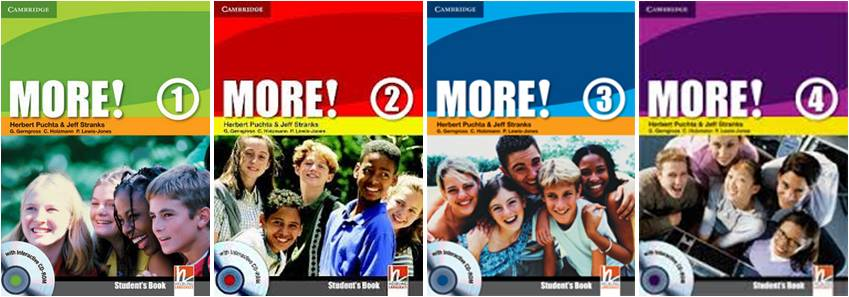

Английский язык
Для школьников
7-9 лет
Курс рассчитан на детей младшего школьного возраста и основывается на новейших учебных пособиях Super Minds, охватывающих 7 уровней от Complete Beginner до Pre-Intermediate. Основная задача курса – замотивировать детей на изучение иностранных языков.
Учебники Super Minds методично совершенствуют навыки мышления студентов, тренируя их память и улучшая внимание, а живые истории дают детям возможность понимать социальные ценности. Учебный комплект для учащегося каждого уровня включает в себя учебник, рабочую тетрадь и DVD-ROM, содержащий видеоигры и сюжеты, которые помогут закрепить пройденный материал.
Каждое учебное пособие рассчитано на 1 академический год и состоит из 9 разделов, включающих в себя наиболее актуальные для младших школьников темы. Вместе с главными героями дети отправляются в увлекательное путешествие, что делает весь курс больше похожим на приключение. Одновременно с этим материал подается в форме, позволяющей готовиться к детским ступеням Кембриджских экзаменов.
10-13 лет
Обучение подростков в возрасте от 10 до 13 лет проходит по современным учебным пособиям More! издательства Cambridge University Press, включающим в себя 4 уровня. Первый уровень содержит раздел повторения английского материала с нуля, что делает учебник доступным и для тех, кто ранее не изучал язык.
Новый материал в пособии подается плавно, доступная структура учебника и большое количество разнообразных упражнений на закрепление материала способствуют быстрому освоению всех навыков владения английским языком (чтение, письмо, аудирование и говорение). Видеоматериал с аутентичными тематическими роликами с участием носителей языка способствует более подробной отработке восприятия речи на слух. Широкий спектр онлайн материалов делает выполнение домашних заданий увлекательным.
Комплект материалов для учащегося включает в себя учебник и рабочую тетрадь с аудио диском. В комплекте также есть CD-ROM – диск с дополнительными интерактивными заданиями на закрепление материала в интересной игровой форме.
Каждое учебное пособие рассчитано на 1 академический год и состоит из 12 разделов, включающих в себя темы, ориентированные на интересы современных подростков.
14-17 лет
Курс разработан для старших школьников и основывается на учебных пособиях Laser, охватывающих уровни от Beginner (A1) до Intermediate (B2). Первый уровень содержит раздел повторения английского материала с нуля, что делает учебник доступным и для тех, кто ранее не изучал язык.
Учебные пособия отличаются своей структурой, позволяющей вводить новый материал, закреплять его и обращаться к повторению. Насыщенность разнообразными заданиями в формате международных экзаменов делает учебные пособия незаменимыми помощниками в подготовке к экзаменам по английскому языку (ДПА, ЗНО). Задача курса – научить студента любого уровня свободно говорить, причем говорить грамматически правильно.
Комплект материалов для учащегося включает учебник и рабочую тетрадь с аудио диском. Каждое учебное пособие рассчитано на 1 академический год и состоит из 16 тематических разделов, отвечающих интересам современной молодежи.
Для взрослых
Основной курс
Подготовка к экзаменам
Подготовка к ДПА и ЗНО
Выпускные экзамены имеют особый формат, и зачастую школьных знаний оказывается недостаточно для их успешной сдачи. Комплексная подготовка к ДПА и ЗНО предполагает освоение и отработку основных навыков владения английским языком: чтение, письмо, аудирование и устная речь, а также закрепление и расширение словарного запаса и грамматических конструкций. Основная задача этого курса – в максимально короткие сроки заполнить имеющиеся пробелы в знаниях учащихся и довести их уровень владения иностранным языком до необходимого для успешной сдачи экзамена.